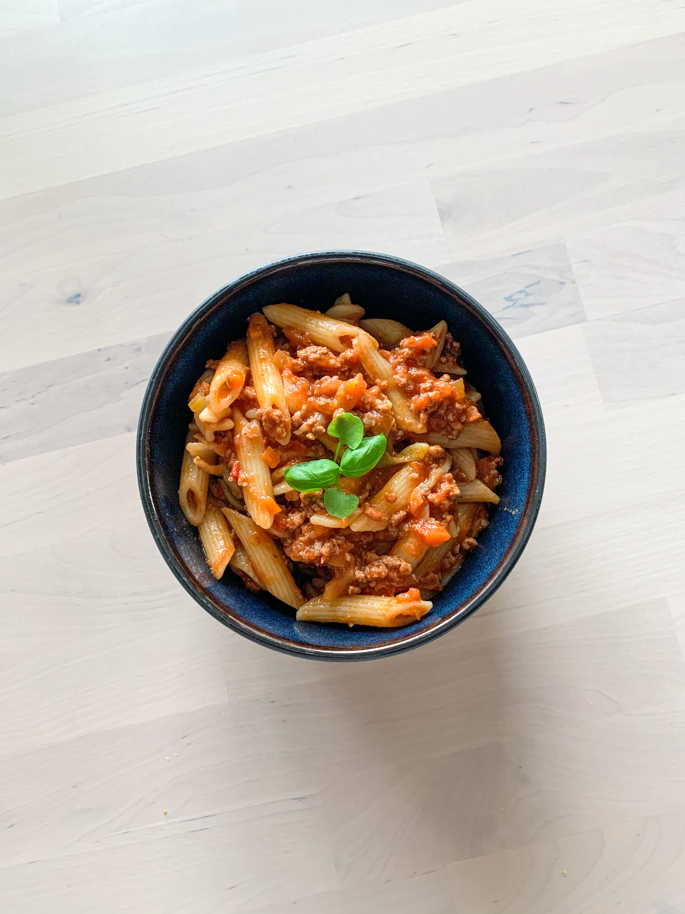

Bolognese
- Posjoner: 8
- Tid: 120 min
- Kcal: 190
Ingredienser
- 1 stk Gulrot
- 2 stk Selleristang
- 0,5 stk Løk
- 2 fedd Hvitløk
- 800 g Kjøttdeig
- 2 ss Tomatpurè
- 2 ss Balsamicoeddik
- 3 dl Fond
- 2 bokser Hermetiske tomater
- Salt
- Pepper
Fremgangsmåte
- Stek gulrot, selleristang, hvitløk og løk til de er lett gjennomsiktige. Sett til side.
- Stek kjøttdeig til det er gjennomstekt. Ha grønnsakene tilbake i gryten.
- Rør inn tomatpurè og balsamicoeddik. La det frese inn i kjøttet og grønnsakene før du tilsetter fond, tomater og krydder.
- La bolognesen putre så lenge du har tid til, og server med pasta.